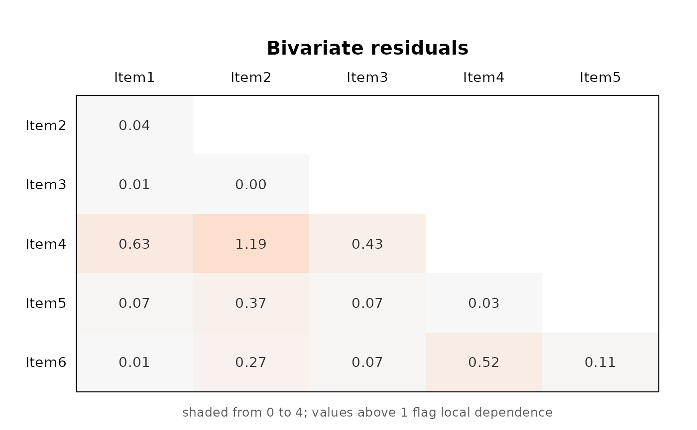

The same lower triangle the print method shows, shaded so that the pairs needing attention are visible at a glance rather than read off a table.
The colour scale is anchored at 1, the value a residual should not much
exceed if the model is true, rather than at the largest residual present: a
scale stretched to fit the data would make a well-fitting model look exactly
like a badly fitting one. Cells at or below 1 are pale, cells above it
redden, and everything past max_shade shares the deepest colour so that a
single extreme pair cannot flatten the rest.
Usage
# S3 method for class 'bivariate_residuals'
plot(x, max_shade = 4, main = NULL, ...)Arguments
- x
An object returned by
bivariate_residuals().- max_shade
Value at which the colour scale saturates.
- main
Plot title.
- ...
Ignored.
Examples
set.seed(1)
X <- matrix(rbinom(600, 1, 0.5), ncol = 6)
fit <- fit_mixture(X, n_components = 2, measurement = "binary")
#> Note: `X`, `Y`, `n_components`, and `structural` are the legacy interface. The current arguments are `indicators`, `n_classes`, `predictors`, and `outcome` / `outcome_covariates`.
plot(bivariate_residuals(fit))
